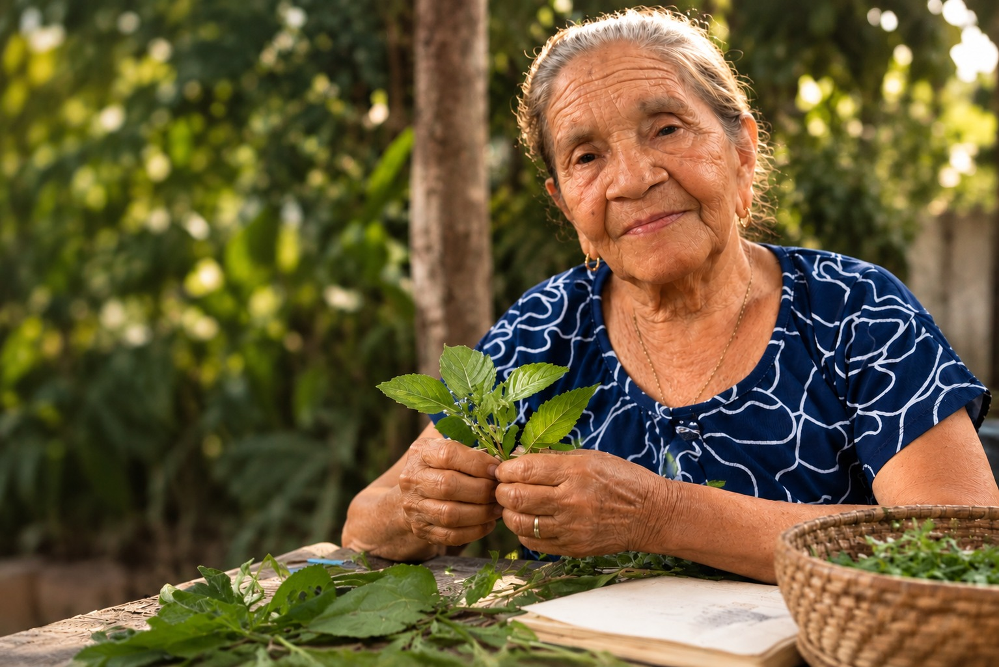

Mulheres
quilombolas
Memória, território e cuidado transmitidos entre gerações.
Enciclopédia viva · Bacabeira, MA
Um catálogo digital para escutar as mulheres que conhecem a terra, reconhecer a ciência das plantas e manter viva a memória de um território.
Explorar o catálogo ↓
O que estamos guardando
Mulheres quilombolas, benzedeiras e quebradeiras de coco mantêm uma biblioteca viva em seus quintais, gestos e palavras. Aqui, cada ficha nasce de uma escuta e de uma conversa entre saber tradicional e investigação botânica.
Conhecer o processo ↗Caderno de campo digital
03 entradas
em destaque
Tente outro nome, espécie ou categoria.
Quem mantém a memória
Não há catálogo sem escuta. As histórias são compartilhadas pelas mulheres da comunidade, com autoria, consentimento e o direito de escolher o que deve — ou não — ser publicado.
Conhecer as guardiãs ↗Memória, território e cuidado transmitidos entre gerações.
Palavra, gesto e presença como formas de acolhimento.
Conhecimento do tempo, do fruto e dos caminhos da mata.
Como uma ficha nasce
Um processo em quatro movimentos, feito com cuidado para que tecnologia e ciência ampliem — sem apagar — a origem de cada saber.
Entrevistas e relatos orais com as guardiãs do território.
Nome popular, nome científico e conferência botânica.
Texto, áudio e imagem revisados por quem compartilhou.
QR Codes que levam do jardim da escola à história da planta.
✦ Todo conteúdo público é autorizado e revisado. Este catálogo é educativo: não prescreve tratamentos.
Cientista homenageada
Botânica, naturalista e formadora de gerações. Sua trajetória nos lembra que nomear uma planta é também aprender a enxergar o mundo que ela habita.
Ler sua trajetória ↗“Conhecer a flora é um primeiro gesto de cuidado com a vida.”— inspiração para o laboratório de botânica
QR Code da ficha